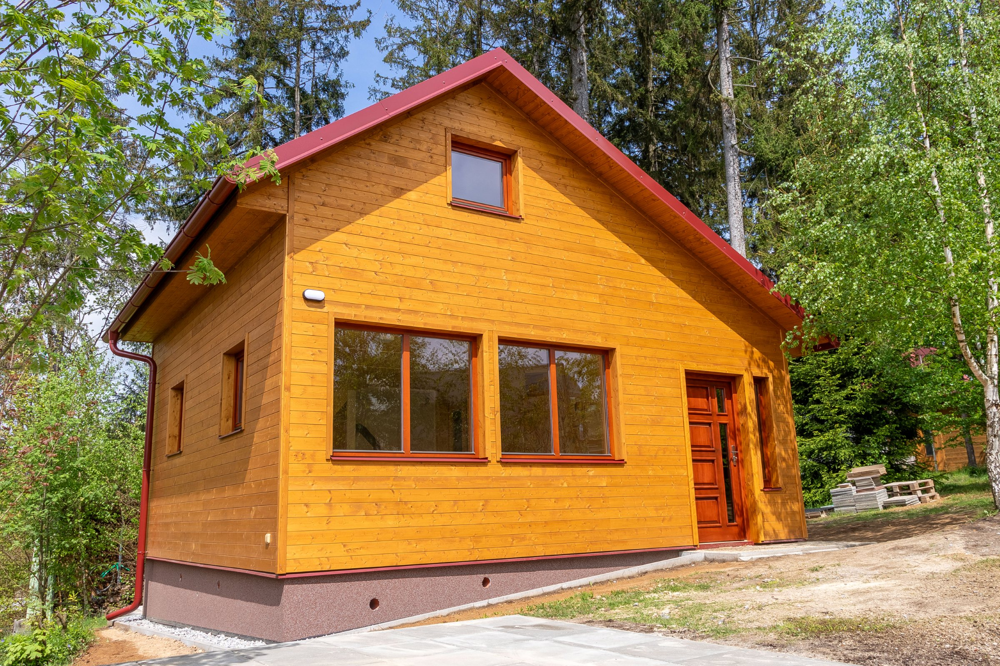
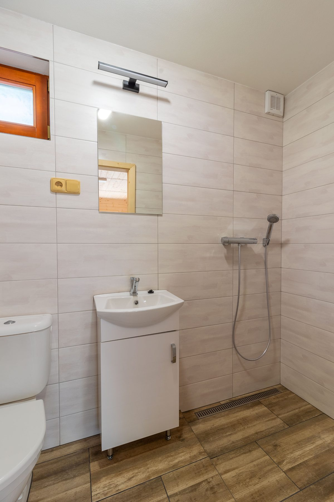

Krovy a nosné konstrukce
Nové krovy, výměny poškozených částí i řešení detailů, které mají opravdu nést.
Tesařství a pokrývačství v Jihlavě
Tesarstvi Jihlava
Krov, krytina i finální detail se řeší jako jeden celek. Domluvu i realizaci drží v ruce Stepan Kvasnicka, bez zbytečných mezičlánků.
Publikovatelná realizace · Chata Větrný Jeníkov

Služby
Každá zakázka je jiná, ale základ zůstává stejný: pevná konstrukce, správně vyřešená střecha a detail dotažený do konce.
Nové krovy, výměny poškozených částí i řešení detailů, které mají opravdu nést.
Opravy a obnova střech se zřetelem na skutečný stav domu, vrstvy střechy i návaznosti.
Přístřešky, pergoly a další konstrukce, kde záleží na proporci, pevnosti a čistém provedení.
Jak se pracuje
Zakázka nezačíná katalogovým řešením. Začíná zaměřením, návaznostmi a tím, co má konstrukce nebo střecha opravdu unést.

Postup
Každá realizace má jiné podmínky, ale dobrý průběh zůstává jednoduchý a srozumitelný.
Nejdřív je potřeba vidět stavbu, pochopit zadání a pojmenovat klíčové návaznosti.
Podle místa se určí rozsah prací, materiál a detail, který bude dlouhodobě fungovat.
Samotná práce stojí na přesnosti, pevném rytmu a detailu dotaženém do konce.
Typické zakázky: nové krovy, opravy střech, pergoly, přístřešky a dřevěné návaznosti kolem domu.
Kontakt
Nejrychlejší je krátký telefon nebo e-mail s popisem stavby. Domluví se další krok, zaměření i rozsah prací.
Telecska 2746/96
586 01 Jihlava